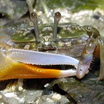
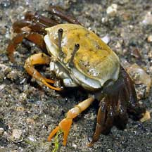
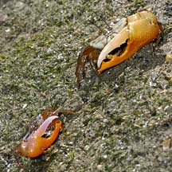
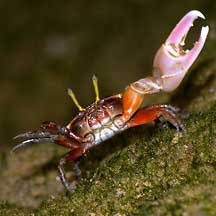
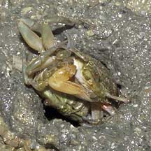
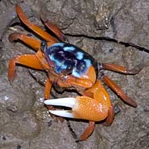
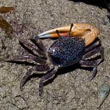

|
|
| crabs text index | photo index |
| Phylum Arthropoda > Subphylum Crustacea > Class Malacostraca > Order Decapoda > Brachyurans > Superfamily Ocypodoidea |
| Fiddler
crabs Uca sp. Family Ocypodidae updated Jan 2020
Where seen? Fiddler crabs are common on our natural undisturbed shores, especially those near mangroves. They are often found in large numbers. Fiddler crabs are highly sensitive to movement and will vanish when they feel footsteps on the sand or see shadows. To see them, wait patiently near their burrows without moving. They will soon re-emerge and you will be rewarded with their amusing behaviour: frantically feeding, squabbling and courting, all at the same time. Features: Body width 2-3cm. The male fiddler crab has one huge pincer, often highlighted in a bright colour. The enlarged pincer may be as large or larger and as heavy as the rest of the crab's body! This enormous pincer is not used to hunt or crush food. It is too small to effectively fend off most predators. Instead, it is used to attract females and to intimidate rival males. The male waves his large pincer in a style and rhythm unique to his species in order to attract the ladies. Fiddler crabs got their name for this behaviour, which resembles a musician playing on his fiddle. |
 Female (top) and male (bottom). Pasir Ris, Jun 09 |
 Males can't feed with the enlarged pincer and have only one small pincer to feed with. Chek Jawa, Oct 04 |
 Females have two small pincers and so can feed faster. Pulau Ubin Jan 04 |
| Looking out: Eyes mounted on long
stalks give the crab a good all-round view on the flat terrain where
they are usually found. When the crab scuttles back into its burrow,
the eyestalks fold down into grooves along the body. Colourful costumes: Fiddler crabs can change colours. Sometimes, they appear different at night and during the day. In some species, the males brighten up during mating season. This makes it challenging to identify the different species of fiddler crabs by their colours alone. The species are generally distinguished by the structure of their pincers rather than by colours alone. Here's more on how to tell apart the fiddler crabs commonly seen on our shores. Breathing air: Fiddler crabs cannot swim and prefer to breathe air. So at high tide, they hide in their burrows, plugging the entrance with a ball of sand to trap some air inside. However, they need water to keep their gill chambers wet as well as to process their food. They absorb water from the wet sand through hairs on their legs. What do they eat? Fiddler crabs eat the thin coating of detritus on sand grains. They scoop sand to their mouthparts with tiny feeding pincers that are spoon shaped and fringed with hairs. The bristle-like mouthparts scrape the sand grains clean of any edible titbits. A male fiddler crab cannot feed with his huge pincer and has only one much smaller feeding pincer. Females, however, have two feeding pincers and can thus feed much faster. Fiddler babies: When a male Fiddler crab succeeds in persuading a female to mate with him, they retire into his burrow. The female may remain there until the eggs hatch. The eggs hatch into free-swimming larvae that drift with the plankton, changing into yet another form before settling down and developing into Fiddler crabs. |
 Males may be 'right' or 'left' handed. Pulau Ubin, Jan 04 |
 Male displaying, waving his legs and enlarged pincer. St John's Island, Oct 04 |
 Mating usually happens inside the burrow, but this shameless pair was outside! Kusu Island, May 07 |
| Role in the habitat: Fiddler crabs
are eaten by many animals higher up in the food chain. The Kingfisher
is among the birds that might snack on them. Status and threats: The Rosy fiddler crab (Uca rosea) is listed among the threatened animals of Singapore. While the other species of Fiddler crabs are not listed as endangered, like other creatures of the intertidal zone, they are affected by human activities such as reclamation and pollution. Trampling by careless visitors also have an impact on local populations. |
| Some Fiddler crabs on Singapore shores |

| Unidentified fiddler crabs on Singapore shores |
|
 Chek Jawa, Mar 11 |
 Tanah Merah, Sep 13 |
| Uca
species recorded for Singapore from Wee Y.C. and Peter K. L. Ng. 1994. A First Look at Biodiversity in Singapore in red are those listed among the threatened animals of Singapore from Davison, G.W. H. and P. K. L. Ng and Ho Hua Chew, 2008. The Singapore Red Data Book: Threatened plants and animals of Singapore. **from Ng, Peter K. L. & N. Sivasothi, 1999. A Guide to the Mangroves of Singapore II (Animal Diversity) Latest genus from WORMS
|
Links
References
|